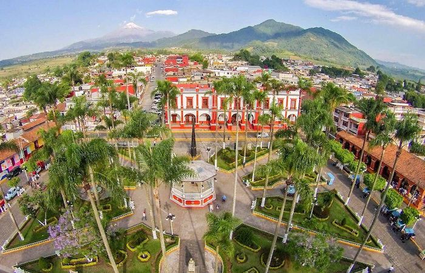
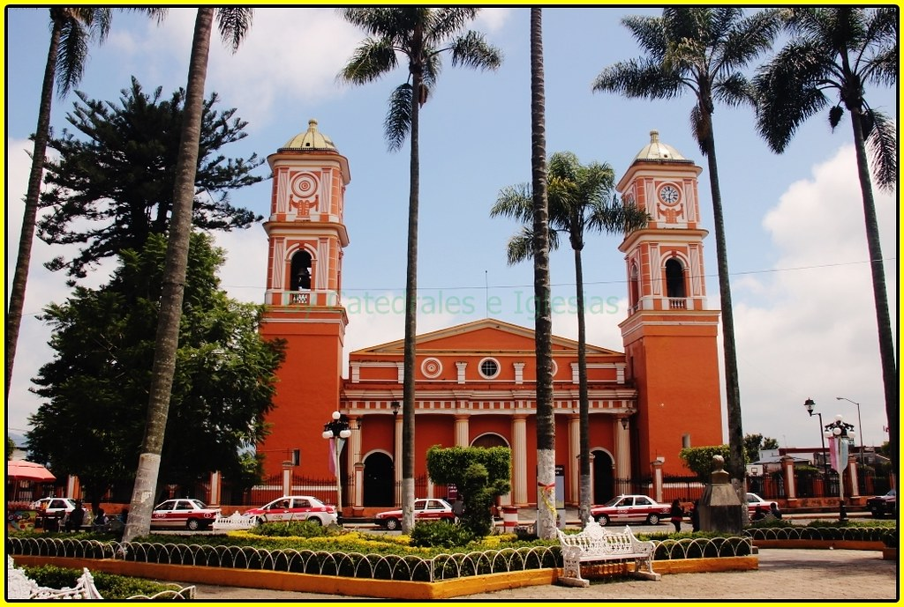
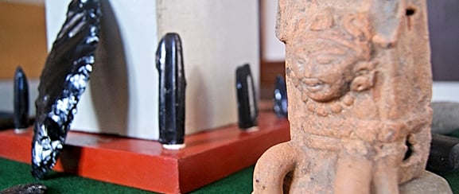
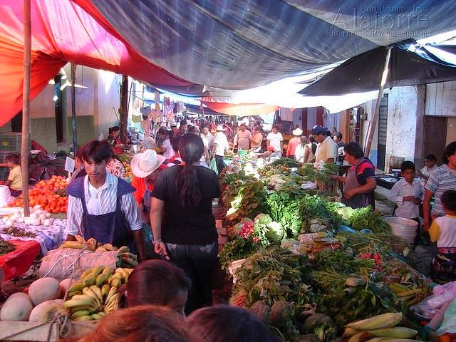
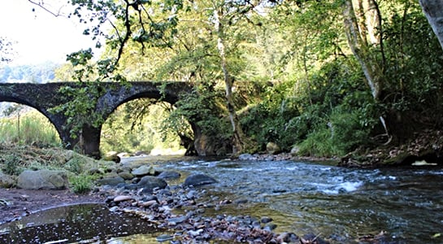
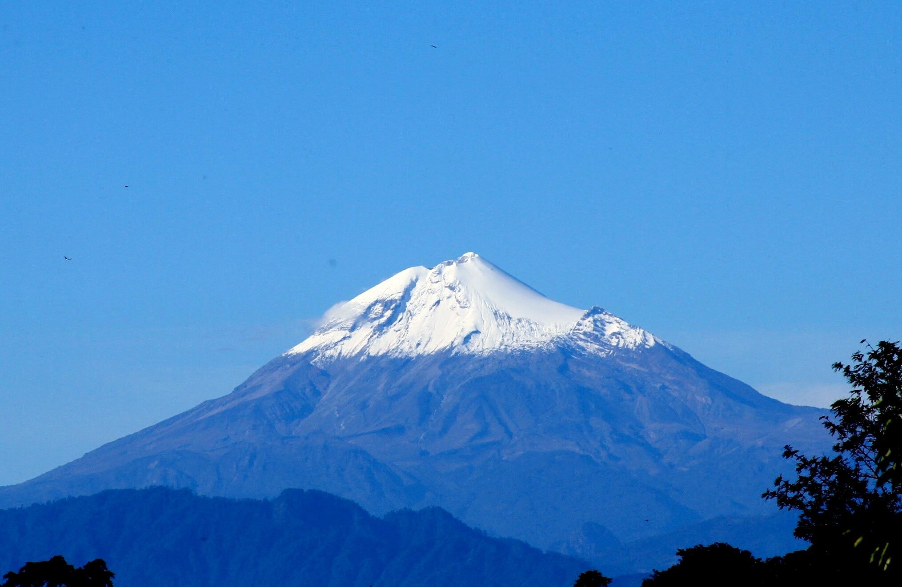
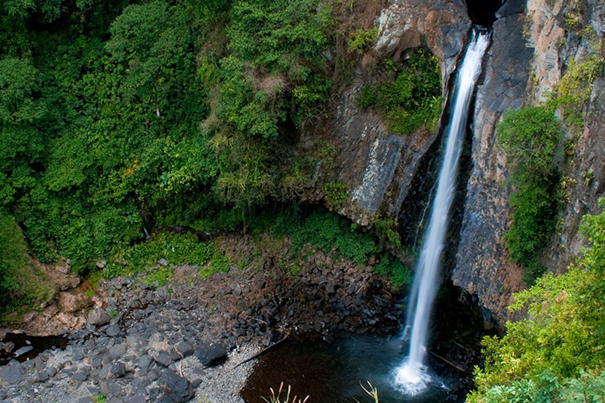
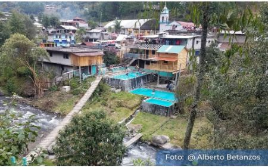

Coscomatepec de Bravo es una Ciudad mexicana localizada en la zona montañosa central del Estado de Veracruz de Ignacio de la Llave o región de las Altas Montañas, centro agrícola y comercial de los Municipios vecinos. Nombrado Pueblo Mágico el 25 de septiembre de 2015 en la feria nacional de Pueblos Mágicos en la ciudad de Puebla.
Algunos lugares que pueden visitar son:
Este pintoresco lugar con estirpe colonial se encuentra en el centro de la ciudad y es el punto de partida para todos los turistas. El sitio contiene mucha información tanto de referencias históricas y monumentos, así como información turística, además cuenta con diferentes restaurantes para comer unos buenos antojitos mientras observas el parque, el Ayuntamiento y la Iglesia.

https://acortar.link/LZ8WP8
La Iglesia es reconocida por su arquitectura, ya que data de finales del siglo XVIII, esta Iglesia debe su importancia a que en ella se conserva 1 de los 3 Cristos de la Agonía o de las Limpias que hay en el mundo, pintada por Miguel de Santiago. Dice la leyenda, crucificó y atravesó con una lanza a su modelo, solo para poder plasmar la agonía de este en su obra.

imagen de :
Se localiza en la ex biblioteca de la Ciudad y resguarda alrededor de 300 piezas de distintos materiales como cerámica, obsidiana y piedra basáltica, pertenecientes principalmente a las culturas Totonaca y Otomí. Es un museo pequeño, por lo que si estas en el parque municipal, puedes darte una vuelta rápida para conocer el lugar.

imagen de :
Este Tianguis se realiza todos los lunes en el Parque municipal , donde algunos pobladores aún acuden a realizar cambios o trueques en vez de comprar la mercancía, tal y como se hacía en la época de la colonia. Podrás encontrar productos directamente del campo, por lo que es una buena forma de conseguir los mejores productos locales.

imagen de :
Este lugar lo podemos encontrar rumbo a la carretera Fortin-Huatusco y aunque no esta bien señalado, es un notable lugar para caminar y toparse con una joya «escondida» de la arquitectura de la época colonial. Aquí podrás deleitarte con construcciones que datan desde el 1805 y disfrutar del cauce del río Jamapa.

imagen de :
Coscomatepec es la localidad más urbanizada de Veracruz dentro de las cercanías al Pico de Orizaba, por lo que es común encontrar servicios de montañismo, camping y observación de la flora y fauna que se encuentra en el pico de Orizaba. El recorrido para conocer este icónico lugar lo puede realzar cualquier persona, sin importar su condición física.

imagen de :
A solo 20 minutos de Coscomatepec encontramos Alpatláhuac, famoso por sus alfombras de Aserrín que se colocan los Jueves Santos para poder contemplar las principales calles del municipio llenas de colores y por su cascada de 200 metros de altura. Alrededor de la cascada podremos encontrar cabañas y restaurantes con comida típica de la región.

imagen de :
Este Municipio se encuentra a 45 minutos de Coscomatepec y es conocido por poseer 2 balnearios donde disfrutar de aguas termales y albercas de poca profundidad, así como buenos antojitos. También puedes disfrutar de bañarte en el cauce del río Jamapa provienente del Pico de Orizaba, o simplemente rentar una cabaña y disfrutar del sonido del río.

imagen de :
Coscomatepec de bravo es un lugar muy bello y catalogado dentro de la compañia de pueblos magicos, sienpre con la puertas abiertas para cuando gusten visitar este hermoso lugar